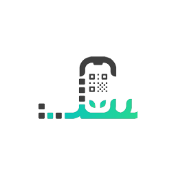
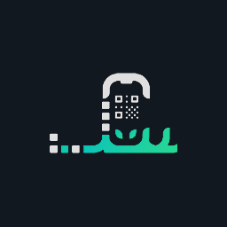
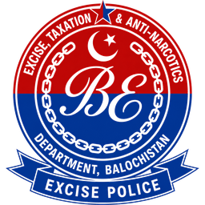
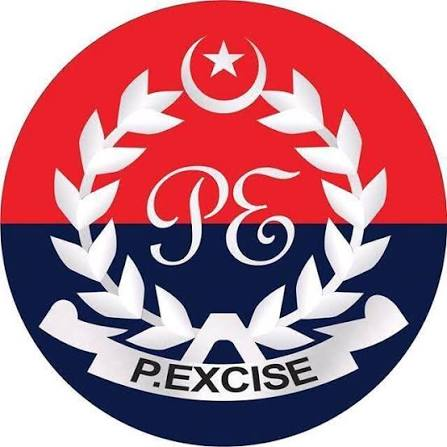

Driving licence
Driving licence portals by province
Licensing is run by provincial / ICT / GB traffic authorities — not Excise. Pick your region to apply, renew, or verify a licence on the official site (including Gilgit-Baltistan DLMIS).
Verify a driving licence
Use the official verification page for the region that issued the licence. Enter only what that portal asks for (usually CNIC and/or licence number). Never use third-party “checkers” for important decisions.




All licence portals
Punjab — DLIMS / Dastak
The official portal is dlims.punjab.gov.pk (DLIMS 2.0). Online driving licence services run through the Government of Punjab’s Dastak one-window platform.
Main services
- Learner licence — apply online, pay, then print / download the learner copy
- Regular licence — new / renew / duplicate flows with approval and dispatch
- International licence — same online path with admin approval
- Track application — real-time status on your dashboard
- Verify licence and e-Licence tools on the same site
How to verify (Punjab)
- Open the official page: dlims.punjab.gov.pk/verify
- Select licence type: Regular, International, or Juvenile.
- Enter CNIC (or passport number where shown) and licence number.
- Solve the captcha and click Verify License.
Learner licence steps (official)
-
Create account & login
Sign up on the DLIMS / Dastak licensing platform.
-
Fill the application form
Enter details carefully and choose the vehicle category (bike, car, etc.).
-
Upload documents
Face photo, CNIC front, CNIC back, and a government-doctor medical certificate if you are over 50.
-
Generate PSID & pay
Pay via ATM, online banking, or mobile banking (e-Pay style PSID). Learner fee listed on the portal: Rs 500 per category.
-
Print / download learner
After payment, the digital learner licence is available in your login — often immediately.
Regular / international licence
Same start (account → form → PSID → payment), then approval and processing & dispatch of the card.
Documents checklist
- Picture (face)
- Scanned / photo of original CNIC (front and back)
- Medical certificate from a government doctor if age is above 50
- Uploads should be clear (PDF / JPEG) and within size limits
Apply, track, or verify on the official portal. Contact listed on the site: 042-99202892 · info@dlims.punjab.gov.pk · emergency 15.
Verify licence Visit portalSindh — Driving License Sindh (DLS)
Official site: dls.gos.pk — Driving License Unit of Sindh Police.
What you can do
- Online licence verification — check a licence on the portal or the free “Driving License Sindh” app
- DLS Online — digital licensing services
- Learner driving licence campaign — mobile units for learners at institutions / organisations on request
- Guides for how to obtain a licence, computerized licence process, fee structure, and offices
- Theory / academic test practice tools on the site
How to verify (Sindh)
- Open dls.gos.pk/online-verification.html
- Type the CNIC in the search field.
- Click Verify License (complete reCAPTCHA if shown).
- Review the result fields: name, licence number, type, category, father/husband name, CNIC, branch, issue date, expiry date.
Overseas Pakistanis can also email verification queries to dlssindh@gmail.com (as listed by DLS).
Contact (from official site)
- Address: Zamzama Street No. 11, Near Do Talwar, Clifton, Karachi
- Email: dlssindh@gmail.com
Verify a licence or start online services on the official Sindh Police portal.
Verify licence Visit portalIslamabad — ITP DLIMS
Official site: dlims.islamabadpolice.gov.pk — Islamabad Traffic Police Driving License Information Management System. Helpline listed on the portal: 051-9001541.
Main services
- Apply for learner / licence renewal
- Verify licence and verify learner
- e-Licence digital access
- Citizen login for applications
How to verify (Islamabad)
- Open dlims.islamabadpolice.gov.pk/verify-license-information
- Enter licence number and CNIC (typically without dashes).
- Submit to view the official ITP record.
Use this only for licences issued by Islamabad Traffic Police. Punjab / Sindh / KP / Balochistan records stay on their own portals.
Apply, renew, or verify through Islamabad Traffic Police.
Verify licence Visit portalKhyber Pakhtunkhwa — Dastak citizen portal
Official citizen tools: dastakappecitizenkp.pk.
Main tools
- Verify your licence — enter licence number + CNIC
- Track your application — enter tracking / application ID + CNIC
How to verify (KPK)
- Open dastakappecitizenkp.pk
- Under Verify Your License, enter licence number and CNIC.
- Submit to check the record. To follow an application, use Track Your Application with tracking ID + CNIC instead.
Verify a licence or track an application with CNIC.
Verify / track KPK Excise guidesBalochistan — Quetta Traffic Police
Official site: qtp.gob.pk — Balochistan / Quetta Traffic Police digital services.
Driving licence services
- Licence verification — by CNIC
- Learner permit — requirements and process info
- Permanent licence
- International licence
- Duplicate licence
How to verify (Balochistan)
- Open qtp.gob.pk/driving/verfication (official QTP path)
- Enter your CNIC (try with or without dashes if the first attempt fails).
- Complete any captcha and click Verify.
The portal also covers traffic / e-challan tools, computerized licences with security features, and a public mobile app for tracking services.
Contact (from official site)
- Email: info@qtp.gob.pk
- Quetta: +92-819213316
Verify a licence or read requirements for learner, permanent, international, and duplicate cards.
Verify licence Visit portalGilgit-Baltistan — Police DLMIS
Official portal: dlmis.gbp.gov.pk — Driving License Management Issuance System for Gilgit-Baltistan Police (PITB-supported), used with Police Khidmat Markaz centres across GB districts.
What the portal covers
- Learner and regular licences — applied / processed through the integrated DLMIS workflow
- Online verification — confirm a GB-issued learner or regular licence
- Police Khidmat Markaz — in-person licensing centres linked to the same system
How to verify (Gilgit-Baltistan)
- Open dlmis.gbp.gov.pk/verify/
- Enter the details the form asks for (typically CNIC and/or licence number).
- Submit to view the official record. For new applications, use Police Khidmat Markaz / the main DLMIS home.
Verify Gilgit licence Open DLMIS Gilgit Excise guides
Quick comparison
| Region | Verify page | What to enter | Authority |
|---|---|---|---|
| Punjab | dlims.punjab.gov.pk/verify | CNIC/passport + licence no. + captcha | DLIMS / Dastak |
| Sindh | dls.gos.pk/online-verification.html | CNIC | Sindh Police DLS |
| Islamabad | ITP verify-license-information | Licence no. + CNIC | Islamabad Traffic Police |
| KPK | dastakappecitizenkp.pk | Licence no. + CNIC | Dastak citizen |
| Balochistan | qtp.gob.pk/driving/verfication | CNIC | Quetta Traffic Police |
| Gilgit-Baltistan | dlmis.gbp.gov.pk/verify/ | Details on official form | GB Police DLMIS |
FAQ
Where do I verify a driving licence online?
Use the official verify page for the issuing region — jump to Verify a driving licence for direct links (Punjab, Sindh, Islamabad, KPK, Balochistan, Gilgit-Baltistan).
Can I use Punjab DLIMS for a Karachi licence?
No. Apply and verify on the portal that matches where the licence is issued — Sindh DLS for Sindh, Punjab DLIMS for Punjab, and so on.
Is Vehicle Hub PK a government licence office?
No. We only publish guides and official links. Applications, fees, tests, and cards are handled only by the official traffic / police portals above.
Where do I confirm current fees?
Always check the Fee Structure / requirements page on the official portal for your region. Published amounts (such as Punjab’s learner fee) can change.